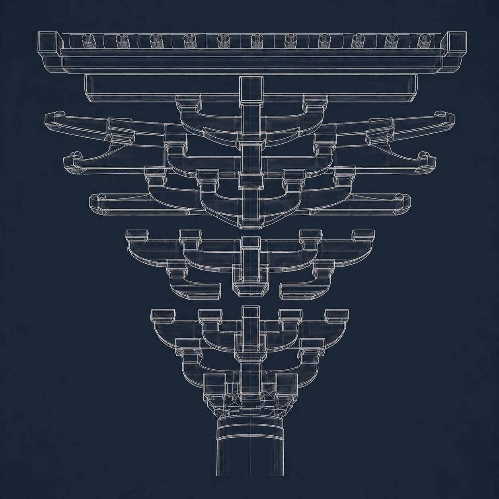
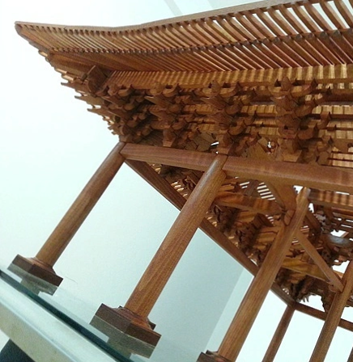
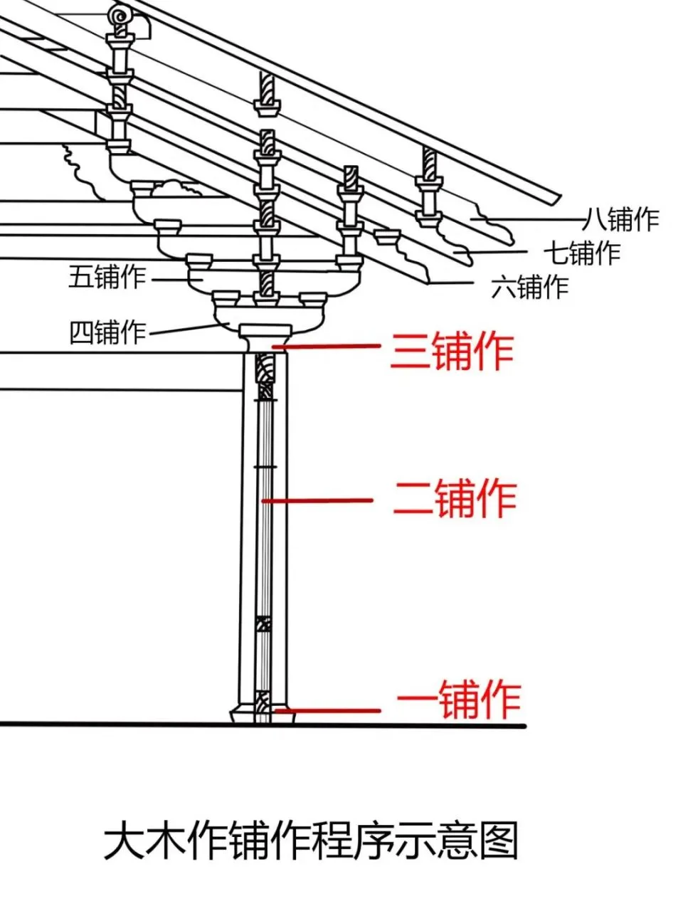
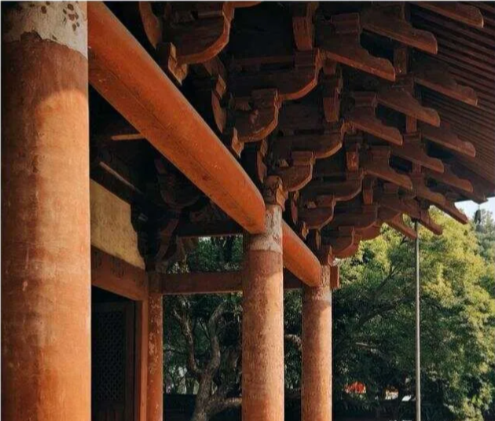

以材份为纲，以规矩为度，以匠心为骨
解码宋代官式建筑的营造密码，重现大宋木构的巅峰风华
一场席卷北宋朝廷的工程腐败风暴，意外地催生了中国最伟大的建筑法典
北宋中晚期，王朝的大兴土木达到巅峰。宫殿、王府、太庙、官署、城墙、河道…… 工程一个接一个上马，国库的白银像流水一样往外淌。但没有人能说清，这些钱到底花在了哪里。
问题出在标准上。偌大一个王朝，竟然没有一部统一的建筑规范。 工匠们各凭经验，官吏们随意定价。同样的工程，在不同的地方、由不同的人经办， 造价可以相差数倍。负责工程的官吏与工匠暗中勾结，虚报物料、夸大工时， 从朝廷的银库里源源不断地抽取着民脂民膏。
更可怕的是，没有人能戳穿这个谎言。因为没有标准—— 没有谁说得清一根梁木应该多粗，一堵墙应该多厚，一座大殿应该用多少工。 腐败，就在这片制度的真空地带里，疯狂生长，肆无忌惮。
王安石看到了这个问题。熙宁年间（1069-1085），他推行变法， 其中一项重要举措就是规范全国的工程营造标准——统一预算、统一用料、统一工时。 他要让每一文钱都花在明处，让每一根木料都有据可查。
然而变法触动太多人的利益。保守派的反击汹涌而至，王安石最终罢相，新法逐一被废。 但那一颗"标准化"的种子，已经深深埋入了朝廷决策者的心底。 无论政治风云如何变幻，工程腐败的顽疾必须被根治。
命运选中的，是一个叫李诫的人。 崇宁二年（1103年），这部由将作监丞李诫奉敕编纂的巨著——《营造法式》， 经宋徽宗批准正式刊行天下。
它不是一本普通的书。它是中国历史上第一部由官方颁布的、完整的建筑技术规范。 比欧洲同类标准早了数百年。它用统一的术语、精密的模数、严格的标准， 从根本上杜绝了虚报与欺诈的可能。这是一把终结腐败的利剑，更是一座文明的丰碑。
—— 当腐败吞噬了国库，
当谎言遮蔽了真相，
一位工程师挺身而出，
用一部标准，终结了千年的混乱。
他不是坐在书斋里的文官，而是一位深入工地的科学家
李诫（约1060—1110），字明仲，郑州管城人，出身官宦世家。 他的父亲李南公是朝廷重臣，哥哥李譓官至龙图阁直学士。 这样的家世，本可以让他走一条轻松的仕途——读书、应举、做官、享福。
但他偏偏选择了一条最"接地气"的路。将作监——这个掌管全国工程营造的机构， 需要和木头、石头、泥土打交道，需要下工地、爬脚手架、检查每一根柱础是否规整。 在当时的官场，这不是一个"清贵"的差事。但李诫不在乎。 他在这个机构里一干就是十余年，亲自督造了五王邸、辟雍、尚书省、太庙等数十项大型工程。 这些浸满汗水的实践经验，使他不是纸上谈兵的理论家，而是一位真正"手上有泥"的工程师。
更难得的是，他不仅是工程师，还是艺术家。他擅长书法，精于丹青，著有《续山海经》《琵琶录》等。 这种文理兼修的气质，最终成就了一部既有精密技术、又有文化底蕴的千古奇书。
官宦世家将作监丞实践经验文理兼修在那个没有CAD、没有建筑系的年代，编写一部系统的建筑规范，简直是天方夜谭。 但李诫的方法，至今读来仍令人叹服——
他从《周礼·考工记》到前朝工程档案，系统查阅了大量典籍。他要知道古人是如何规定的，历代的营造制度是如何演变的。这种追根溯源的研究方法，放在今天就是学术论文的"文献综述"。
他深知真正的知识藏于民间工匠之手。于是他走访各地，向那些头发花白的老匠人请教，将世代口传心授的"不传之秘"一一记录整理。这些工匠的名字未曾载入史册，但他们的毕生智慧，被李诫永久地保存了下来。
他不是简单记录，而是结合自己十余年的督造实践，逐一验证、修正每一条规范。确保它经得起工地的检验，而不是停留在纸面上的空谈。这种"从实践中来，到实践中去"的作风，正是现代工程学最核心的精神。
绍圣四年（1097年），李诫奉旨重修《营造法式》。他把十余年的工程实践、数百位匠人的口传心授、 数十部典籍的考据成果，全部熔铸于一炉。元符三年（1100年），全书完成定稿，进呈御览。 崇宁二年（1103年），经宋徽宗批准，这部三十四卷的巨著正式刊行天下。
⸻ 李诫生平关键节点 ⸻
出生于
郑州管城
恩补入仕
郊社斋郎
调任
将作监主簿
升任
将作监丞
奉旨重修
营造法式
完成定稿
进呈御览
刊行颁行
天下
病逝于
虢州任上
一部拥有词典、文法、定额、标准和图纸的完整工程体系
《营造法式》共三十四卷，分为五个层次。学者张十庆先生用"语汇-文法-释读"的概念，精准概括了它的体系。我们可以把它想象成一部完整的建筑工程操作系统。
统一各时期建筑构件的名称和术语。在此之前，同一种构件在不同地方有不同的叫法，工匠之间沟通困难，审核官员也难以核查。有了"总释"，从汴京到岭南都用同一套语言。没有统一术语，就没有统一标准。
全书核心。详细规定了壕寨、石作、大木作、小木作、雕作、彩画作、砖作等十三个工种的营造规范。每一个工种的每一道工序、每一个构件的尺寸和比例，都有明文规定。这是中国乃至世界上最早的系统化建筑技术标准。
明确所有工种完成工作所需的时间。比如"雕刻一平方米花草纹饰，普通工匠需要三天"。这意味着，不管谁来施工，用工量都有据可查。制度的意义在于，它让"虚报工时"变得不可能。
规定各工种的用料规格和数量。一根大梁用多少木料，一堵墙用多少砖石，都有精确的标准。官员不能再以"多用了料"为由虚报开支。
六卷图示，绘制平面图、断面图等直观图示。在文字尚可篡改的年代，图纸是最难造假的证据。这也是整部书中最受后世推崇的部分——它让标准变得"可见"。
从术语的统一，到施工定额的制定，再到图纸的绘制——
李诫用九百年前的智慧，构建了一套可操作的、闭环的、防腐败的工程管理体系。
这就是中国古代建筑标准化最大的成就。
八个等级，一套模数。选择材等，建筑的万千构件便有了尺度。
在《营造法式》出现之前，工匠们各凭经验，同样的构件在不同工地尺寸各异，无法批量生产，也无法质量验收。李诫需要一套方法，让所有构件的尺寸都标准化——这就是材份制。
材份制的核心逻辑极为简洁：把建筑所有构件的尺寸，都变成"材"的倍数或分数。所谓"材"，就是一种标准化的木构件断面。柱子的直径是材高的2倍，斗拱出挑的长度是材高的3倍。只要确定了"材"的等级，整座建筑的比例就自动锁定了——就像今天的参数化设计软件，输入核心参数，所有构件便自动生成。
参数化设计模数系统以材为祖标准化生产👆 选择材等，观察建筑比例变化
一等材（高9寸/宽6寸）—— 用于最高等级的九至十一间大殿
层层出挑，四两拨千斤——斗拱是如何成为中式建筑的灵魂的
在《营造法式》中，斗拱的正式名称叫"铺作"——"铺"是层层铺垫，"作"是动作与结果。 它位于柱子和屋顶之间，是整座木构建筑中最复杂、最精密的受力结构。
等级公式：铺作数 = 出跳数 + 3。其中"3"指固定存在的栌斗、耍头、衬方头。 四铺作（出1跳）是最基础样式；七铺作（出4跳）则是现存宋代地面建筑的最高规格。
铺作=斗拱出跳数+3四至八铺作这张线框透视图清晰地展示了斗拱从下至上的组装逻辑：从一根柱子开始，逐层增加构件， 最终形成一个庞大精巧的结构，承托起最上方的屋檐。它揭示了斗拱"层层铺垫、逐层出挑"的构造密码。


这张图最直观地说明了一个核心道理：斗拱不是装饰品，而是一套精密的传力系统。 每一层栱和昂的咬合，都是为了将屋顶的重量一步步传递到柱子上。
这张剖面示意图展示了斗拱从柱础到屋檐的逐层搭建过程。图中用文字标注了从"一铺作"到"八铺作"的层级， 红色线条标注了荷载如何从屋顶通过层层斗拱传递到柱子的路径。


铺作的层数越多（铺作数越高），出檐越深远，建筑等级也越高。这套"层层叠加、向外悬挑"的构造逻辑， 在力学上是巧妙的荷载传递，在美学上是收放自如的韵律。
下面这件模型是一座宋代风格的转角铺作，提取了六铺作或七铺作中最外跳的部分。 拖拽鼠标可以旋转视角，滚动滚轮可以拉近拉远，试试从不同角度观察它的结构之美。
层层出跳的华栱与昂，仿佛一尾游鱼展开的鳍与尾，在空间中凝固成动态的平衡。
这是中国古建筑独有的美学：力与美的统一。
一本书如何被破译，如何影响八百年，如何成为中华建筑的基因
1919年，朱启钤在尘封的故纸堆中重新发现了《营造法式》，并自筹资金刊印。这本书的重见天日，震动了整个中国学术界。
梁启超称其为"吾族文化之光宠"，
国际学界更将其誉为"整个中古时期世界上最完备的建筑学专著"。
在它诞生的宋代，工匠们有了统一的术语和标准，朝廷有了核查工程造价的依据，腐败的温床被釜底抽薪。在元明清三代，它的模数思想被继承、被改编，成为官式建筑的不二法度。从晋祠圣母殿的副阶周匝，到独乐寺观音阁的用材制度，再到紫禁城的万千殿宇——处处都有《营造法式》的影子。
然而书中的术语晦涩难懂，被学界称为"天书"。真正破译密码的是梁思成。他加入中国营造学社，走遍全国190多个县，测绘了2738处古建筑。1937年，他在五台山发现了佛光寺东大殿，凭借《营造法式》中记载的唐代用材制度，准确断代其为唐大中十一年（公元857年），一举打破日本学者"中国已无唐代木构"的断言。
一本九百年前的技术手册，成为现代学者解锁中国古代建筑密码的钥匙。没有它，中国古建筑研究将是一片黑暗。
北宋天圣年间创建，四周环绕廊子的做法正是《营造法式》记载的标准制度之一。梁思成称其为"具有典范性的北宋建筑"。
辽统和二年重建，斗拱用材比例与《营造法式》高度吻合，历经28次大地震依然屹立。
明清皇家宫殿，其模数化思想正是《营造法式》所确立的标准化体系的直接延续。
致敬李诫
约1060 — 1110
将作监丞，以法式立规矩
千载营造，为后世定准绳
今天，当我们用BIM技术建造摩天大楼时，
当我们在软件中输入参数自动生成建筑模型时，
或许不会想到——
这种"标准化+模数化"的思想，
早在九百年前，就已写入一本叫《营造法式》的书里。
李诫和他的材份制，是中华文明贡献给世界建筑史的一份独特智慧。
《法式数诠》—— 一部宋代建筑经典的当代传播